LumiMemo
A Vibrant, Feature-Rich Notepad That Makes Note-Taking Colorful and Effortless

A Vibrant, Feature-Rich Notepad That Makes Note-Taking Colorful and Effortless
LumiMemo is a beautifully designed notepad application that transforms simple note-taking into a colorful, organized experience with rich text editing, flexible viewing options, and seamless voice-to-text capabilities.
LumiMemo is a modern notepad app that combines simplicity with powerful features. Users can create vibrant, color-coded notes with rich formatting options, organize them in list or grid layouts, and switch between light and dark modes for comfortable viewing in any environment.
Most notepad apps are either too basic (plain text only) or overwhelming (complex word processors). Users need a middle ground - something simple enough for quick notes but powerful enough for serious content creation, with visual organization that makes finding notes effortless.
As both Product Designer and Developer, I handled the complete project lifecycle from user research and visual design to building the React Native application with Expo, implementing the rich text editor, and integrating voice-to-text functionality.
Creating a notepad that's both beautiful and functional, making organization visual and editing powerful.
Make note discovery effortless through vibrant color-coding and flexible grid/list layouts that let users see their content at a glance.
Provide rich text formatting, lists, links, and media embedding without overwhelming users with complexity.
Enable hands-free note creation with voice-to-text that captures thoughts as fast as users can speak them.
Offer both light and dark modes so users can work comfortably whether it's bright daylight or late at night.
A methodical approach balancing visual appeal with functional efficiency.
Why do people abandon or never organize their notes?
A notepad that's as beautiful as it is functional:
Understanding the diverse needs of note-takers from students to professionals.
Deep dive into understanding the student note-taker's daily experience.
Understanding the academic note-taker's perspective
Streamlined journey from opening the app to creating rich, organized notes.
1. Launch app → See sample note with instructions on grid layout
2. Switch between grid and list view via hamburger menu
3. Search for specific notes using search bar
4. Long-press any note for quick preview with options (Share, Pin, Duplicate, Delete)
5. Tap plus button to create new note
6. In editor: Add heading and body text with rich formatting
7. Use formatting toolbar above keyboard:
• Bullet lists, Numbered lists, Checklists
• Add images, Add files, Insert links
• Undo/Redo buttons
8. Voice-to-text: Speak to type hands-free
9. Tap Done → Note saved with color and timestamp
10. Bulk actions: Select multiple notes to delete at once
11. Toggle light/dark mode in settings
12. Share app or rate via hamburger menu
A vibrant, modern color palette with full light and dark mode support.
Bold, distinctive colors that make organization visual and beautiful.
Martel Sans - A clean, modern sans-serif font optimized for readability.
Thoughtfully designed features that balance power with simplicity.
Every note can be assigned one of seven vibrant colors (blue, purple, orange, yellow, green, red, pink), making it instantly recognizable. Students can color-code by subject, professionals by project, anyone by priority. Combined with grid and list view options, finding the right note becomes visual and intuitive rather than a search exercise.
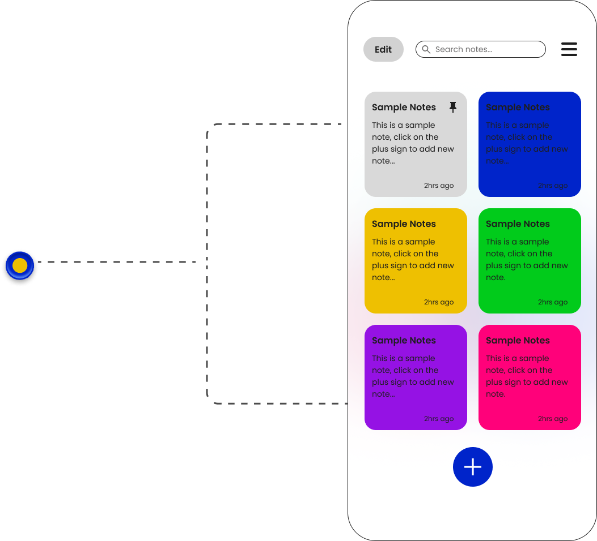
Create beautifully formatted notes with everything you need: headings, bold/italic text, bullet lists, numbered lists, interactive checklists, embedded images, attached files, and clickable links. The formatting toolbar sits conveniently above the keyboard for instant access without interrupting your flow. Undo and redo buttons ensure mistakes are never permanent.
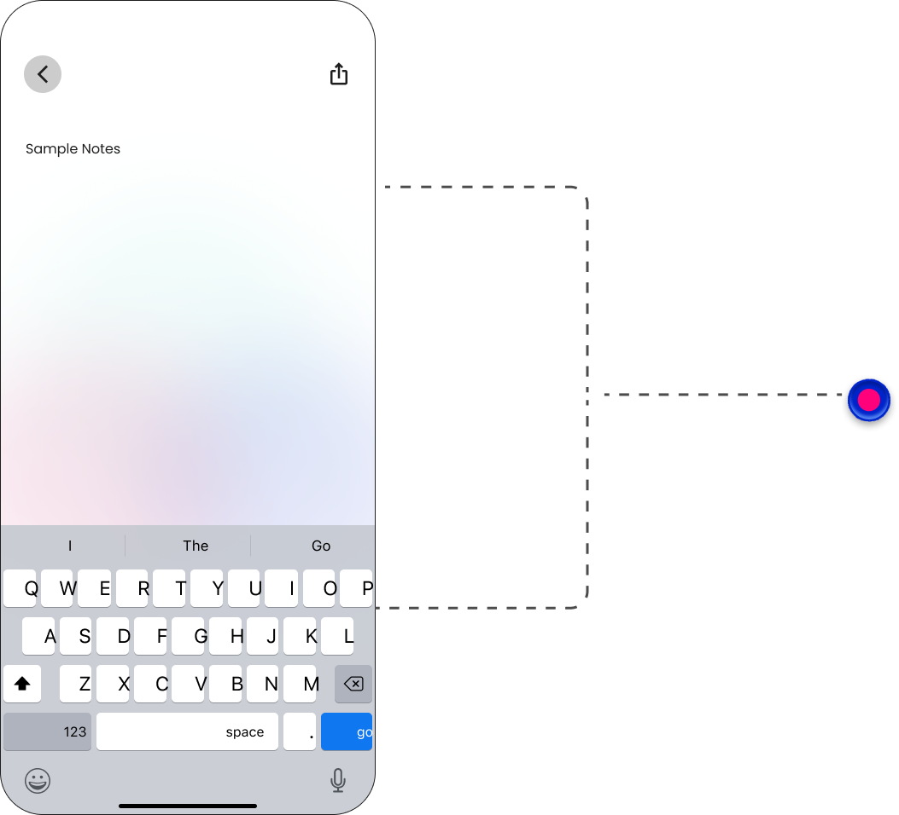
Speak your thoughts and watch them appear as text instantly. Perfect for capturing ideas while walking, driving, or when typing would be too slow. Currently integrates with device speech recognition, with custom in-app implementation in development for more accurate, uninterrupted transcription that doesn't stop mid-sentence.
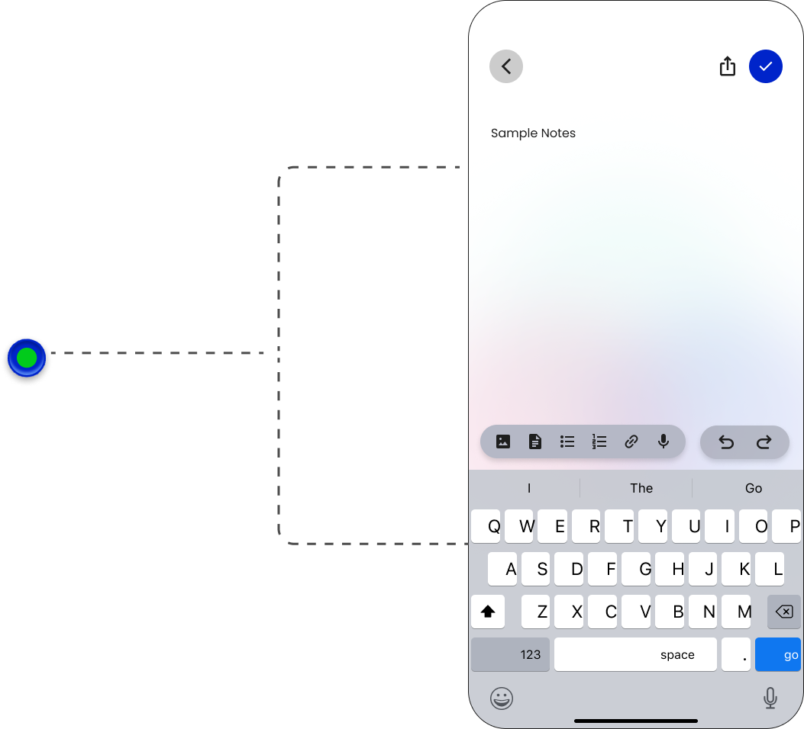
Long-press any note to see an instant preview without opening the full editor. The preview modal shows the note's heading and body text, plus quick actions: Share the note via any app, Pin/Unpin to keep important notes at the top, Duplicate to create copies for templates, or Delete when no longer needed. Actions without opening reduce friction significantly.
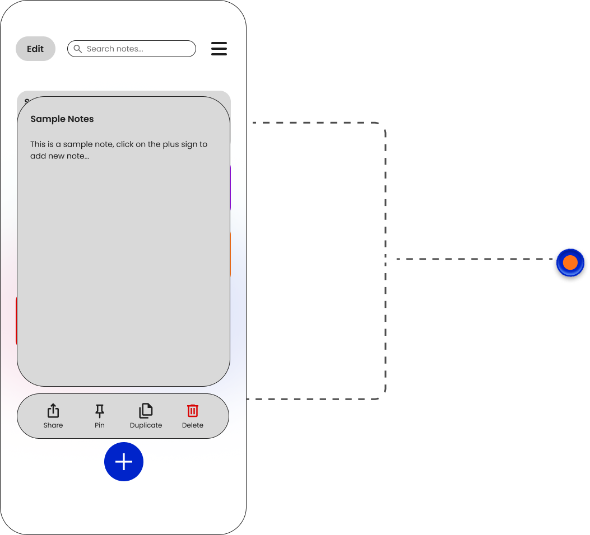
Not just inverted colors - a carefully designed dark theme where colorful notes pop against deep backgrounds. Perfect for late-night work, early morning thoughts, or anyone who prefers reduced eye strain. Toggle instantly in settings. Both themes are equally polished, not an afterthought, making LumiMemo comfortable to use 24/7.
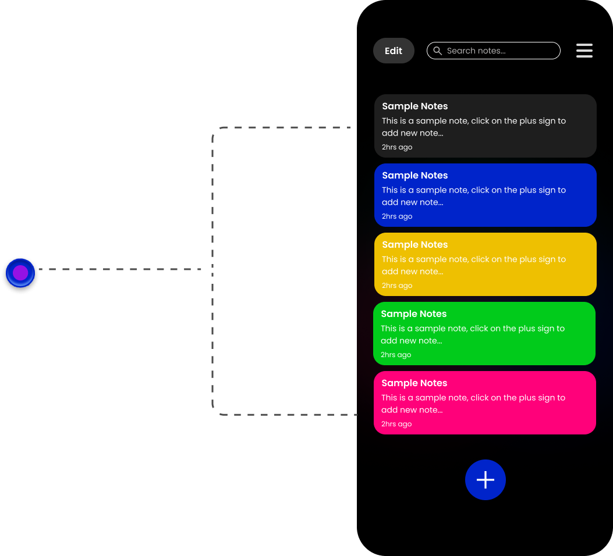
High-fidelity screens in both light and dark modes showcasing the complete experience.
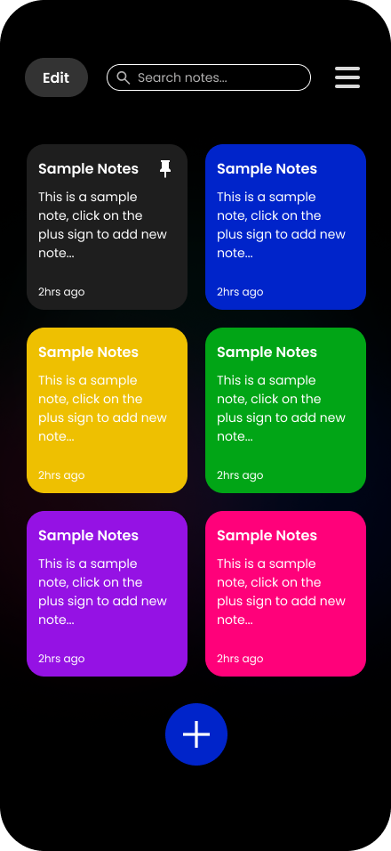
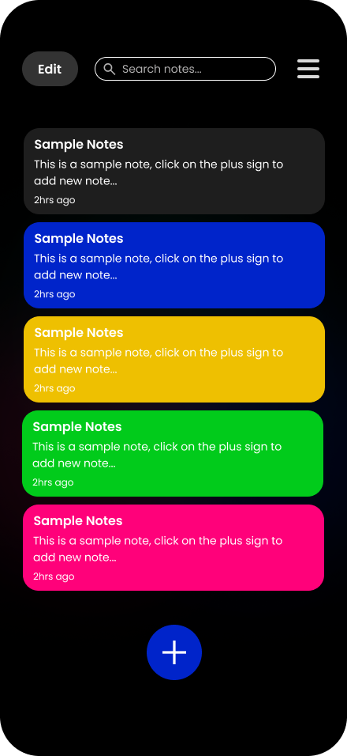
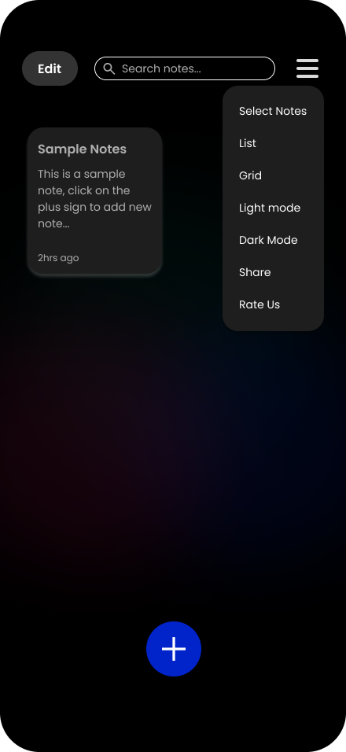
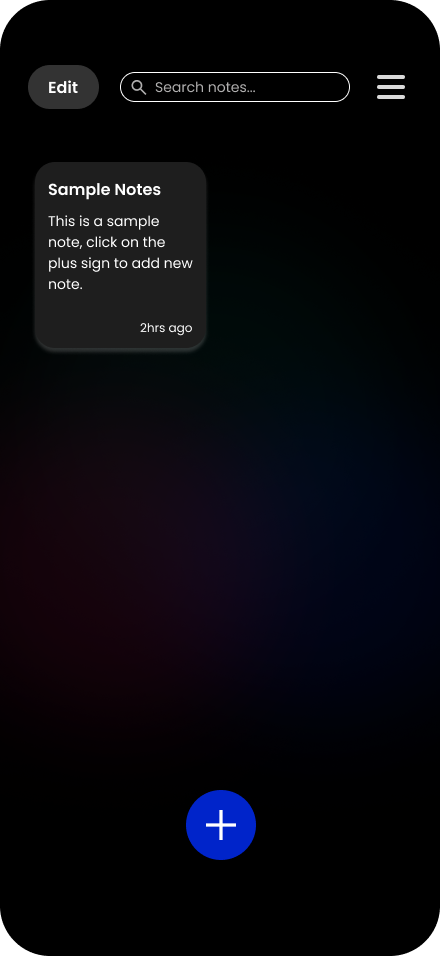
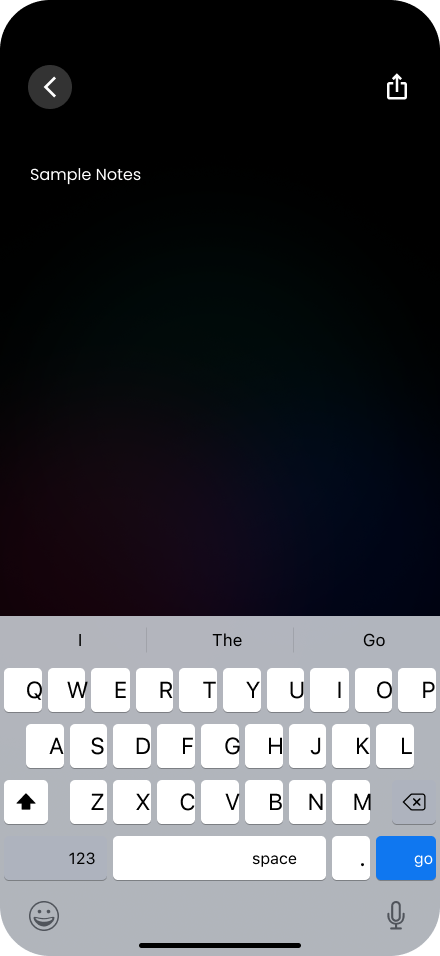
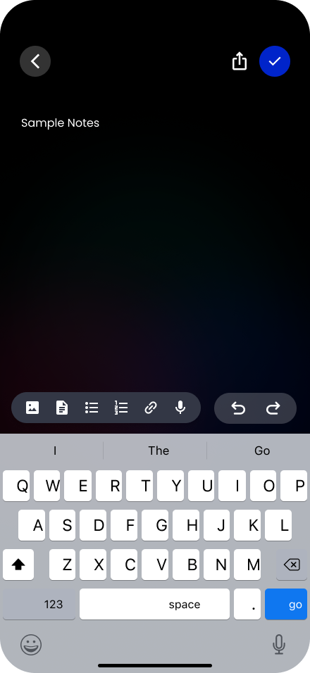
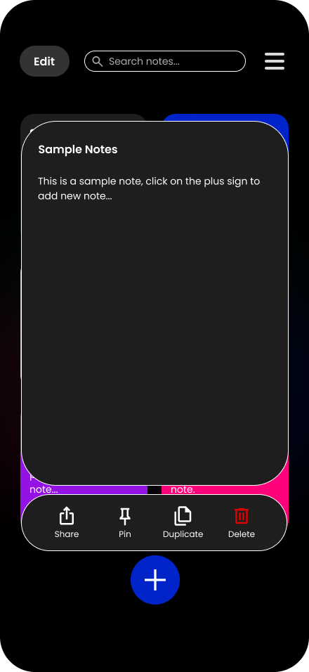
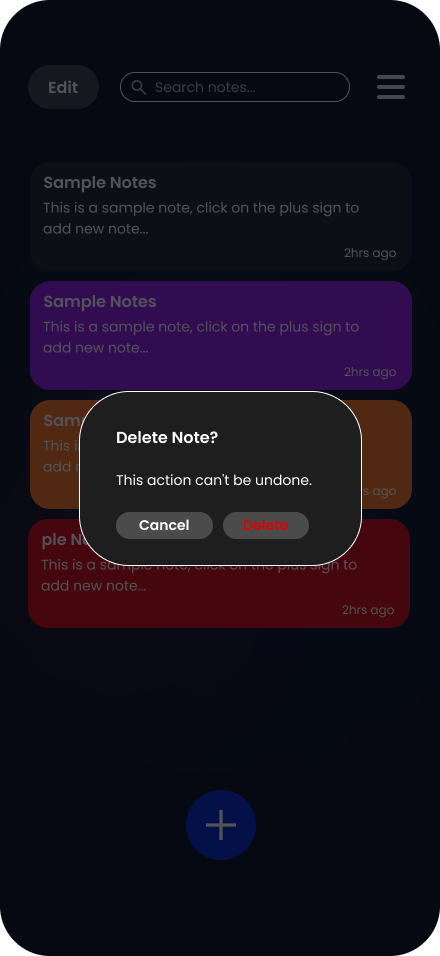
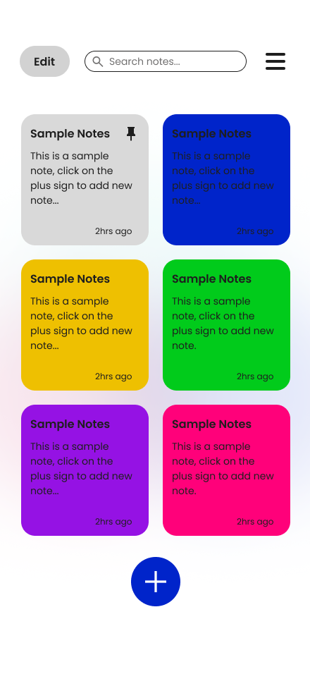
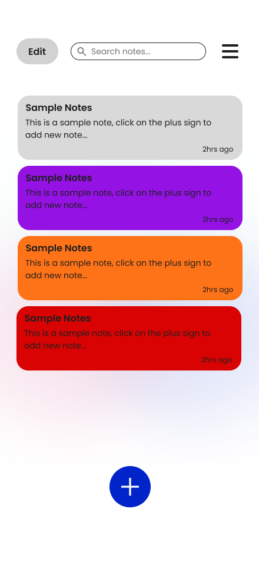
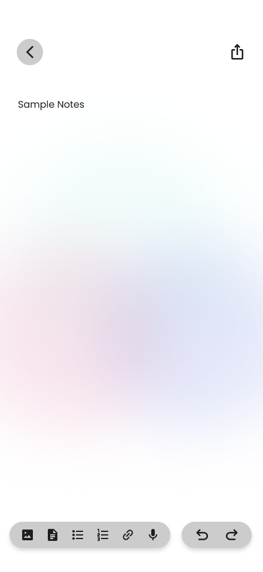
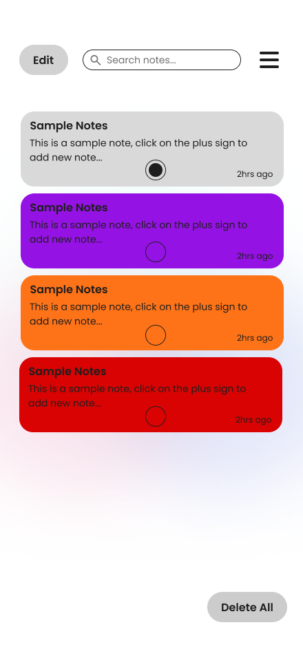
Creating a notepad that users actually enjoy using every day.
The biggest design challenge with LumiMemo was balancing power with simplicity. Every notepad app faces this tension - add too few features and it's limiting, add too many and it becomes overwhelming. The solution came from understanding that users don't want features for features' sake - they want capabilities that solve real problems.
Color-coding solved the "all my notes look the same" problem. Voice input solved the "typing is too slow" problem. The rich text editor solved the "I need formatting but not a word processor" problem. Grid and list views solved the "different tasks need different perspectives" problem. Each feature had a clear purpose backed by user pain points, not just a checklist of "things notes apps should have."
The dark mode taught me an important lesson about design polish. Initially, I planned to just invert colors - that's what most apps do. But testing it late at night showed how jarring inverted colors actually look. A proper dark mode isn't automatic - it requires redesigning the entire color system. The vibrant note colors needed different luminosity levels to pop against dark backgrounds versus light ones. The result is two complete themes, not one theme with an invert filter.
The ongoing voice-to-text implementation is teaching me about the importance of not shipping until it's right. The device's default speech recognition works, but it stops mid-sentence and requires manual activation each time. This breaks the hands-free promise. Rather than launch with a mediocre experience, I'm building custom speech-to-text that stays active and handles natural pauses correctly. Sometimes "good enough" isn't good enough when it's a core feature.
Looking forward, I want to explore collaborative features - real-time note sharing and editing for study groups and teams. Smart categorization using AI to auto-suggest colors based on content. And cross-platform sync so notes are truly everywhere users need them. But first, I'm focused on perfecting the single-player experience, because no amount of collaboration features will save an app that isn't delightful to use alone.
Let's discuss how I design and build apps that balance beauty with functionality.